MUNIMDIBOSH



PROGRAMMER LEARNED TO DESIGN
I am a programmer and wannabe designer. I love to craft beautiful apps and visual interactions for mobile and web. Learning new design trends and getting inspired from others works is what I do most of the time. Sometimes I love to write and talk on the things I learn and do.
Besides my job as a Software Developer and Design Enthusiast at man goes mobile, I enjoy my time either by watching movies or sketching or riding bike. You can check my social profiles or resumes below to know more about me and what I do.